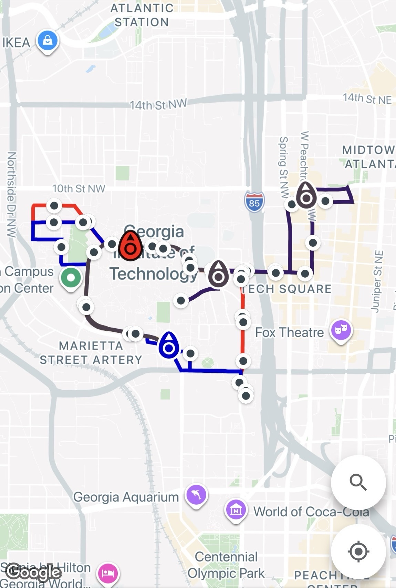
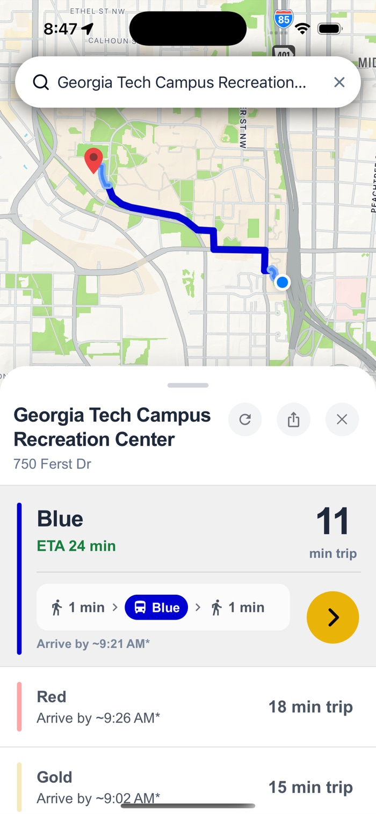
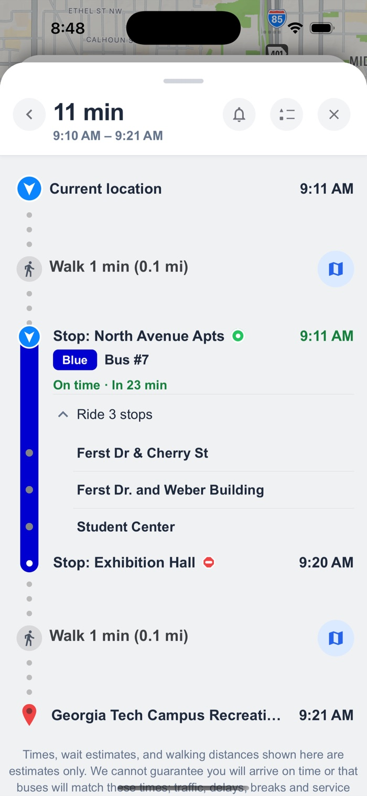

How I built an app thousands of my classmates use by solving a campus pain point

Georgia Tech runs a real bus network across campus, and the official tool shows you where every bus is right now: live dots sliding around a map. That is genuinely useful if your question is where is the bus. It is useless for the question everyone actually has: I'm here, I need to get there, is a bus worth it, and which one do I get on?
Answering that yourself meant knowing the routes by heart, guessing which stop was closest to where you were going, and then watching a dot to work out whether it was coming toward you or driving away. Most people gave up and walked.
So I built RideGT, a campus public transport routing system for Georgia Tech students, serving 2,000+ users. You type where you're going and it hands you a trip: walk here, get on this bus, get off here, walk there. It started as a heuristic in one Python file in September 2025 and now runs on iOS, Android and the web. Download it here!

How the routing works

Every search runs the same five steps:
- Work out where you are and where you're going.
- Throw away every route that has no bus actually moving on it. A perfect route with no bus is not an option.
- Pick where you get on, the closest stop to you.
- Pick where you get off. This is the hard one.
- Rank whatever survived and show you the best few.
The result is a list you can actually choose from, and then a trip you can actually follow: which bus, which stop, how many stops to sit through, and how long you'll be walking at either end.

Step four is where nearly all the difficulty lives. Getting it right is the difference between an app that names a bus and an app people keep on their home screen, and getting it wrong is subtle enough that it shipped, looked fine, and quietly sent people walking in the wrong direction for weeks.
The stop that looked closest and wasn't
The first version scored every possible stop as time on the bus + time walking at the end, then picked the smallest. That sounds correct. It isn't, and the reason is almost funny: the stop you're standing at is in that list, and riding from a stop to itself takes zero seconds. So the stop you were already at usually won, and the app would tell you to get off exactly where you got on.
The quieter version of that bug was worse. Stops genuinely closer to your destination got skipped, because walking there scored as free while riding there cost time. The app kept choosing to stand still.
The mistake underneath was the goal itself. Optimizing total travel time treats a twenty-minute walk as fine as long as it's quick. But nobody gets on a campus bus to arrive sooner. On a campus this small the bus is often slower than walking and people ride it anyway. They ride so they don't have to walk.
The fix
Walking decides. Get off at whichever stop leaves you the shortest walk, with two guards: the stop you got on at is removed from the running entirely, and a slightly farther stop can only steal the pick if it genuinely saves you time: at least a minute and a half, after paying for the extra steps. Without that second guard you'd be sent around the whole loop to save twenty feet.
Then there's a second, separate lie to deal with: a straight line doesn't know about streets. A stop can sit forty metres from your destination on a map and be a five-minute detour in reality, because it's across a road where the nearest crosswalk is a block away, or across the rail cut that splits campus. So we never commit to one stop. We shortlist the three best candidates, look up the real walking route for all three, actual sidewalks and actual crossings, then pick again using those.
Where the number comes from
I built a harness that replays real searches against live bus data: 10 campus buildings, every ordered pair between them, across all six routes running that day. 540 searches. For each one it records the stop a plain closest-stop rule would pick, the stop the three-candidate rule actually picks, and the difference in riding time between them.
Picking from three candidates instead of one changes the answer in 132 of those 540 searches, about one in four. Every one of them is a case where the closest-looking stop sat on the wrong side of the loop.
The largest is North Avenue East to the Campus Rec Center on the Gold route. The closest stop to the Rec Center is CRC & Stamps Health, 84 metres away, and riding there takes 30.1 minutes, because the bus has to travel all the way around the loop to reach it. Exhibition Hall is 105 metres away, a difference of 21 metres on foot, and riding there takes 5.3 minutes.
So 21 extra metres of walking, roughly fifteen seconds, buys back 24.9 minutes of sitting on a bus. Checking only the closest stop misses that completely. The same pattern on the Blue route is worth 10.2 minutes.
It cuts the other way too. Glenn Hall to the Campus Rec Center used to put you on a bus for one minute and then walk you 1,264 metres, three quarters of a mile, straight past the Rec Center on a route that stops at the Rec Center. Now it walks you 84 metres, which is about fourteen minutes of walking removed from a single search.
Buses that have stopped being buses
A parked bus still looks like a bus on its way. Drivers take breaks, shifts change, a bus sits at the end of the line, and the feed keeps reporting it as on-route, so the countdown keeps ticking down for a bus that is never coming.
Right now we watch every bus continuously, and if one hasn't left a 25-metre circle for longer than that stop should reasonably take, we call it stalled instead of pretending it's inbound. Part of the work is separating three things that look identical from the outside: a bus genuinely parked, a bus idling nowhere near a stop, and a bus whose transponder just stopped reporting. That last one looks parked, but the data is simply stale, and calling it a stall would be its own kind of lie.
What's still wrong: the "how long is too long" number leans on the single generic dwell time the feed claims for each stop. But some stops are a ten-second pickup and others are a routine layover, and one number cannot be right for both. We're recording real dwell times now so each stop can learn its own normal from its own history instead of borrowing someone else's.
How I saved $3,000
Every walking distance in this app is a question Google charges me to answer, so before writing the routing code I worked out what it would cost at the scale I was actually expecting.
The research part was unglamorous: size the campus, look at how often people make this kind of trip, and land on a target of roughly 1,000 searches a day. Then count what one search costs. A search compares three candidate routes, and each one needs the walk from you to its bus stop plus the walks from four candidate stops to your destination, which is 15 paid lookups per search. At a thousand searches a day that is 450,000 paid lookups a month, and it grows with every user I gain. That is the kind of bill that quietly kills a free student app.
So caching wasn't a thing I bolted on later when the invoice showed up. It was in the design from the beginning, on one rule: never ask the same question twice.
The walking distance between two fixed points never changes, so every walk we've ever looked up is kept and reused: first from the server's own memory, and behind that from a shared store every copy of the server can read, so a second server never re-buys an answer the first one already paid for.
That barely worked at first, for a reason worth knowing. Bus stops repeat exactly, so those always hit. But your end of the walk is live GPS, which never comes back the same twice. Two readings a metre apart counted as two entirely different questions. So the walk from you to your bus stop was re-bought on nearly every single search: about 90,000 paid lookups a month, every one of them for a walk we already knew the answer to.
The fix is to stop treating coordinates as exact. Every point snaps to a ~10-metre grid, and on a miss we check the neighbouring squares before giving up and paying. Ten metres is smaller than the error in a phone's GPS and far smaller than the gaps between competing stops, so it can never change which stop you're sent to. It just stops us buying the same answer forever. Those recovered lookups alone are over $3,000 a year at Google's rates.
The bus feed is solved from the other end. Instead of every request reaching out to the campus system, the server keeps one shared live copy of every bus, refreshed continuously in the background; route shapes and stop lists, which hardly ever change, refresh every ten minutes. A hundred people searching at once is still one conversation with the campus feed, and because the map, the search, the arrival times and the stall check all read that same snapshot, they can't contradict each other.
Ads that are worth looking at
There's a banner along the bottom of the map, and it is deliberately not an ad network. The posts come from Georgia Tech students and student organizations: club meetings, campus events, auditions, all submitted through a small portal, and every single one is read by a person before it can appear. Nothing publishes itself.
It works because it's local by construction. Everyone who sees it is on the same campus, looking at it in the exact moment they're deciding where to go. An ad for something two thousand miles away is noise. A flyer for something happening in the building you're currently riding toward isn't really an ad at all.
What I took from it
The pain point was never "students can't see the buses." It was that seeing the buses doesn't tell you what to do. The stop that scored zero, the straight line that lied about a crosswalk, the bus that was parked the whole time: almost every hard problem in this app came from taking that difference seriously.